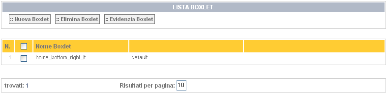
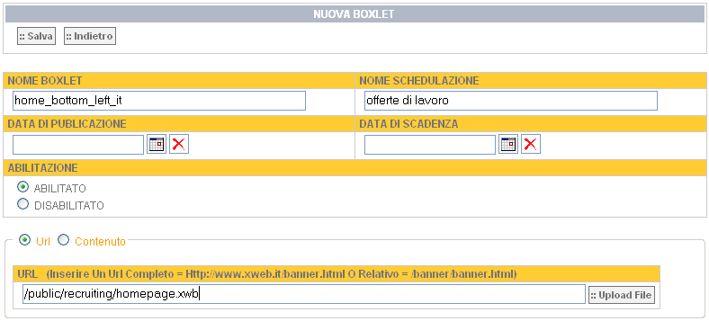
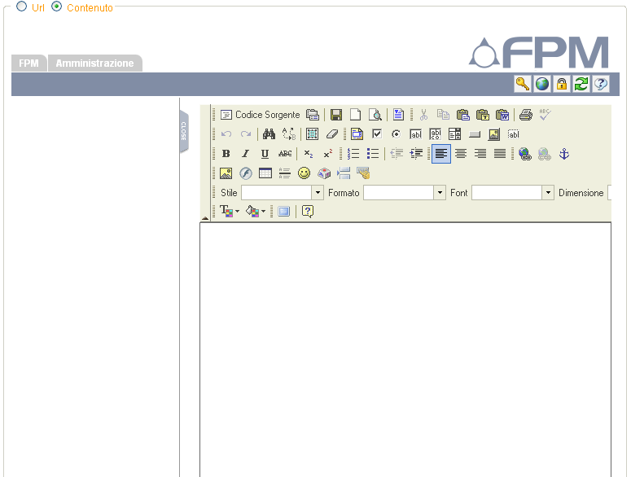

Nella schermata sottostante vi sono elencati, qualora presenti, i nomi
dei vari boxlet.

Ci viene presentato un esempio di creazione di una nuova boxlet. La
nuova boxlet può anche avere una data di pubblicazione e/o una data di
scadenza, selezionabili dal calendario "a tendina" che ci viene presentato
cliccando sul relativo bottone.

Qualora volessimo inserire direttamente del testo pre-formattato manualmente è
possibile dopo aver selezionato il radio button "Contenuto" farlo con l'apposito
editor.

L'azione modifica boxlet ci permette di cambiare il nome della
schedulazione, le date di pubblicazione e/o di scadenza, possiamo
disabilitare/abilitare la schedulazione interessata e possiamo cambiare l'url o
l'eventuale contenuto del boxlet.